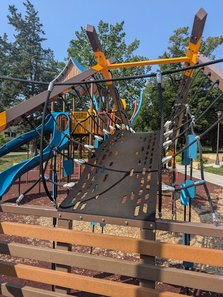
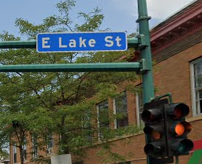

I want to thank each of you for your support and encouragement! I'm continually humbled by the people I meet. Everyone has their unique experiences and expertise. I'm excited to represent such a diverse group of individuals, a beautiful coalition of ethnic and social backgrounds. We have our opportunity to show the world how to work together. Today I want to celebrate the good things happening in our community!
This newsletter covers the following:
(Click "Keep Reading" below for the full newsletter...)
Over the past month I've been enjoying the opportunity to experience the community at George Floyd Square. My love for the people on 38th and Chicago has continued to grow as I meet community leaders, business owners, and nearby residents. Several of the leaders have challenged me to come to the neighborhood as “Dan” not “City Council Candidate Dan”. They tell me, “Just be yourself and listen to what others have to say.” There is something deep and positive at George Floyd Square, rarely seen by the tourists who frequent the site. The story includes a raw community of people who live and work in the area. We forget that they were a community before 2020. They often disagree on many things, but they know and love each other. George Floyd is part of the story, but the roots of this community grow much deeper.
As one who longs to engage the community, I've been listening to neighbors, attending events, and seeking local wisdom. Leaders on the street have asked me, “What is your goal for George Floyd Square?” I'm realizing that this isn't about my vision, but about our vision. It must be about the people and about building community. As I talk to neighbors and business owners nearby, I hear that having an open street on Chicago Avenue ensures safety and encourages economic vitality. Many people also miss how the bus would bring people to the square. Seniors especially mention the need for better transportation options as the 4 block walk can be difficult. In addition, I've heard about the difficulty of safety vehicles entering the area, putting people at risk. Business owners have told me that they don't want the street to become a dead end.
Of course, not everyone agrees, but I feel like people are willing to discuss options. There is no perfect solution, so we must move forward iteratively and reflectively, focusing on the complex social dynamics of the people at George Floyd Square.The vision for the memorial is another story. Opinions are vast, ranging from keeping everything the same to building a modern monument. Yet, we do have a plan already in place for this street. Several key players have suggested that we adapt and implement the 38th Street Thrive Plan (38th St THRIVE Strategic Development Plan - City of Minneapolis). According to the document, the vision for this corridor is: “The Thirty Eighth Street Cultural District exists to continue the legacy and heritage of a deeply rooted African-American community by preserving our economic vibrancy, creative identity, and affordability that strengthens the vitality, resilience and partnership of the people who live and work in the district.”
I hope to share more about this intersection in the future! In the meantime, come enjoy the kick-off of Black Business Week (7/24-7/31) at George Floyd Square this Thursday, July 24 from 2-7pm.
At the Chief's picnic last month, I had the opportunity to catch up with local law enforcement. It is always a joy! To my surprise, I also met one of my former students. He has become one of the officers in the police department. In my tech class several years ago, he was among the most creative. He built unique drones, 3D printed custom boats, and designed fun Rube Goldberg machines. While talking with him, I was encouraged by his positive outlook. It was exciting to see his sense of purpose and enthusiasm for protecting people.
I am encouraged by the hard work the MPD has put in toward a respectful, anti-racist police force. The MPD isn't perfect, but it has made progress, and I've met some of the great people behind the transition. It is full of diverse, young, and creative people who are excited to do good. I'm thankful for Inspector Gomez's leadership and his commitment to serve and protect our diverse community. They continue to turn the 3rd precinct into one respected by the Native, Latino, Somali, and Immigrant communities. It is important to call for police accountability and reform, but it is just as vital to encourage and recognize progress.
I recently had the amazing opportunity to experience the world of violence interruption. I asked if I could join a group one night in South Minneapolis. It was both encouraging and eye opening. It was also helpful when considering policy regarding alternative public safety options.
The first order of business was to keep women on the street safe. A couple of cars parked across the street waiting and flashing their lights at women. The group quickly dispersed the vehicles with flashlights, knowing from experience how to deter the situation. They also recognized vehicles that were circling, which I struggled to remember. It was obvious that their efforts reduced the immediate risk.
Shortly after, we moved to another intersection that housed an open air drug scene. It has been a major concern for many organizations and communities due to the safety risks. I think the group was a bit surprised that I was comfortable there, but I told them that I also live nearby. In reality, I felt safe with them.
At this intersection, the protectors broke up a fight, dispersed a crowd, cleared out the area, and cleaned up trash. They were both respectful and respected. People would leave when they approached them. Many in the violence interrupter group had once been in homeless encampments, so they knew exactly what to say. As we picked up trash, they provided gloves and forbade me to touch the foil with bare hands to avoid any fentanyl residue. It is scary to think that children, who often walk the block, might pick the shiny metal up during the day.
Then there were gunshots nearby. I saw some kids running away in the darkness and my new friends went to check it out. I figured this was a good one to sit out, so I waited for them to return. Apparently, everything was okay. I asked them about their relationship with the police. It turns out that the relationship is good, and the violence interrupters do call the police if there are any violent crimes. The question on their minds is what situations and when to make the call. After the activity at the intersection subsided, we drove around looking for suspicious activity in the neighborhood.
It is obvious that violence interrupters I worked with do prevent crime and deescalate situations. The main concern I hear from the public is that we don't know what they do. It would be nice if there were more visibility into their activity. Both the police department and the behavioral crisis team have extensive reporting and accountability measures. Perhaps we can also integrate some of these into our alternative public safety efforts.
It felt good to be part of the team that night. I hope I earned some street cred through the shared experience. It was nonstop action, but one of the members said that it was a quiet night. I hope to hear and experience more positive stories from violence interrupters.

On Tuesday, June 3rd, Minneapolis briefly experienced the familiar feelings of the civil unrest that occurred in 2020. In our city, we have deep and conflicting emotions regarding justice and the enforcement of laws. We are still in the process of understanding our response to the federal operation at Lake St. and Bloomington on Tuesday. These dialogues are important and should be handled with grace as we develop our collective opinion. As a resident of the East Phillips neighborhood and a city council candidate in Ward 9, I would like to release a statement on this matter. Please reach out if you have any questions or concerns:
(Click "Keep Reading" below for the full newsletter...)
The incident on Lake and Bloomington happened 7 blocks from my house. I know the neighborhood and the people who live here. I have a vested interest in the peace of this community because it is my community. We are a diverse set of neighbors with real joys and real problems. I agree with caring for everyone in my community, especially those who are experiencing fear and anxiety over the direction from our current national administration. We should support and protect immigrants. I also fully support the direction of the Minneapolis Police Department to separate from federal immigration activity. Let's love and protect our neighbors, securing their position as members of the community, peacefully protesting if necessary. We should care for each other and seek the peace of the city.
That being said, I believe that we made several mistakes on June 3rd that we should all learn from. They are listed below:
Key Takeaways:
As a city and a community, we failed together to bring peace, myself included. We should use this as an opportunity to grow in communication, transparency, and truth. Unfortunately we cannot easily control the federal government, but we can learn to stand up for our neighbors peacefully and effectively. It's been done before!